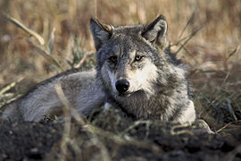

ძაღლი
ძუძუმწოვრების გვარი ძაღლისებრთა ოჯახისა. მათი სხეულის სიგრძე 50-160 სმ, კუდისა — 20-50 სმ, მასა 6-80 კგ აღწევს.
აქვთ რამდენადმე წაწვეტებული დინგი, დაცქვეტილი ყურები, მსხვილი და მძლავრი ეშვები.
კვება
იკვებებიან ცხოველებით, ზოგი ჭამს მძორს, ბოსტნეულს, ხილს, ყურძენს და სხვა.
მრავლდებიან წელიწადში ერთხელ. შობენ 1-19 უსუსურ ლეკვს.
გავრცელებული არიან ყველგან გარდა ანტარქტიდისა, ახალი ზელანდიისა, მადაგასკარისა, სულავესისა და სხვა ოკეანური კუნძულისა.
გვარში ცხრა სახეობაა, რომელთაგან საქართველოში გვხვდება 2 (მგელი და ტურა). ძაღლის გვარს მიეკუთვნება შინაური ძაღლი, რომლის წინაპარია მგელი.
